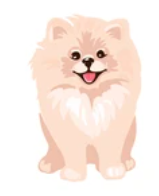
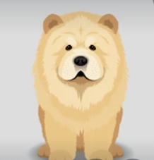
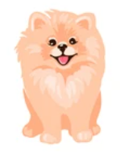

GERALDO
Sou um Spitz Alemão branco bege, sou um cachorro de companhia muito dócil e brincalhão, além de me dar muito bem com meus pais humanos. Sou muito afetuoso e não são considerado um cão agressivo, mas posso ser receoso com desconhecidos num primeiro momento. Em nosso país, também posso ser chamado de lulu da pomerânia. Sou uma raça bastante popular no Brasil.
THOR
Sou um Chow-Chow super dócil que adora ficar junto de um grupo de pessoas, como uma família, por exemplo. A sua personalidade também é definida como calma, gentil e paciente. Porém, é ativo e precisa gastar sua energia com atividades e brincadeiras.
PENELOPE
Sou uma Spitz Alemão Anão laranja de uma natureza curiosa, dócil, corajosa e ousada. É um cão seguro de si mesmo que se mostra distante com os estranhos, mas dócil e tranquilo com seus donos. É muito brincalhão e adora correr. Possui uma grande inteligência e precisa ser estimulado intelectualmente. Dócil por natureza, este cachorro pode ser socializado de maneira simples com animais de outras espécies, no entanto, se mostra bastante desconfiado e receoso em relação à outros cães e pessoas desconhecidas – podendo ser considerado por muitos como um cão de guarda de plantão; sempre pronto para alertar seus donos sobre perigos diversos e a tentar proteger os que ama.